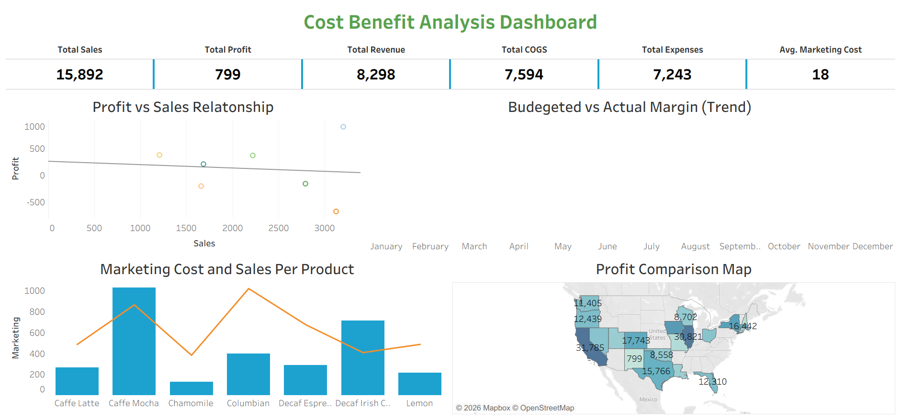
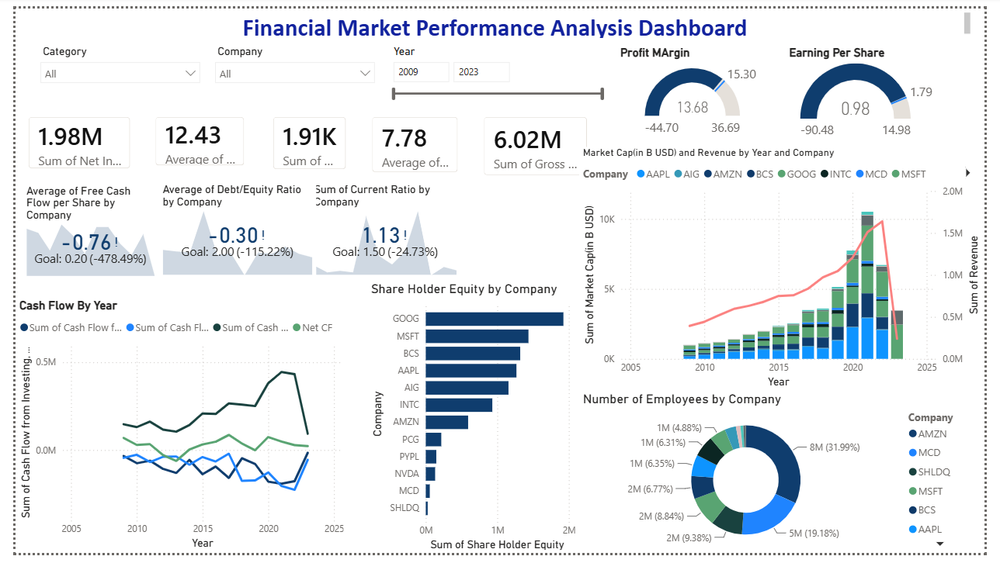
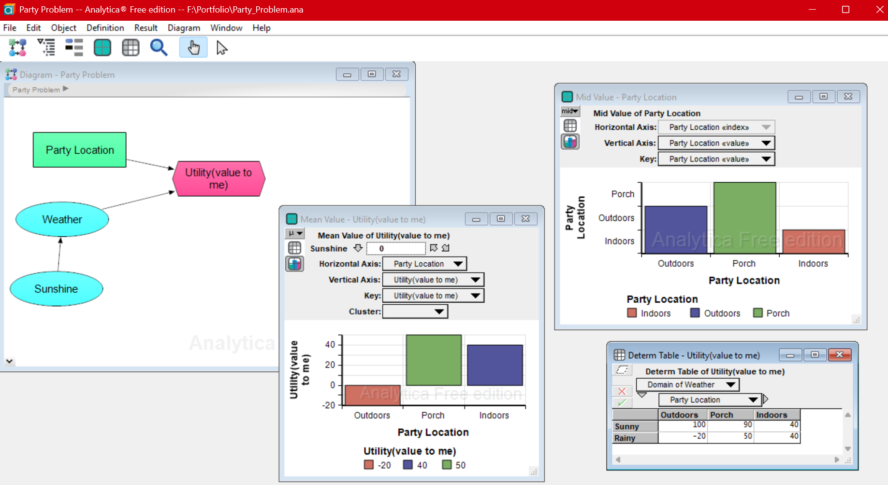

Requirements Engineering
Elicitation & traceability
Get To Know More


Business Analysis & Data Analytics
Business · Data · Decision Support
BBA in Management Information Systems
DeepLearning.AI Data Analytics · IBM Business Analyst · Power BI · GenAI & Prompt Engineering
I am an MIS graduate in Dhaka, Bangladesh, combining business analysis methodologies with applied analytics and AI-assisted workflows. I enjoy understanding the business question, structuring the data, analyzing it, and translating the result into a decision people can use. My work focuses on identifying operational bottlenecks, bridging IT–business gaps, and building actionable, executive-ready dashboards.
Explore My
Elicitation & traceability
UML, DFD & AS-IS/TO-BE mapping
Root-cause analysis & solution evaluation
Engagement, registers & RACI matrices
User stories & collaborative delivery
Functional requirements & test support
Structured analysis practice
Querying & relational database design
Pandas, NumPy & data preprocessing
Dashboards, KPIs & data storytelling
Reporting & business intelligence
Hypothesis testing & correlation analysis
My Professional
Sep 2026 – Present · Full-time
Supporting B2B marketing through market and competitor research, prospect intelligence, lead generation, campaign support, marketing performance analysis, and content initiatives.
Aug 2024 – Feb 2025 · Remote
Supported AI development workflows through data annotation and structured data preparation; organized and labeled datasets, maintained quality and consistency, and collaborated on workflow requirements.
Browse My Recent
Browse My School

I built a Tableau dashboard analyzing cost and profit performance across products and states, pairing a profit-vs-sales trendline with budget-vs-actual margin tracking over time.
Context: A solo Tableau assignment to build a Cost Benefit Analysis Dashboard from a course-provided sales and cost dataset.
Problem: Turn transaction-level sales, cost, expense, marketing, inventory, and budget data into a view of profitability, performance by location and product, and budget attainment.
Approach: Built five linked worksheets: KPIs, a Profit-vs-Sales scatter chart with trendline, Budgeted-vs-Actual Margin by month, Marketing Cost/Sales by product, and a state-level profit map.
Insights: Profit is thin relative to revenue; the trendline is flat to slightly negative, showing that more sales did not reliably mean more profit. California led state profit, while marketing spend and sales did not move consistently together by product.
Limitations: This is a course-provided dataset, not verified real sales data.

I built a one-page Power BI dashboard that tracks profitability, liquidity, and valuation across eight companies at once—slicers, gauges, KPIs against goals, and trend charts on one screen.
Context: A solo Power BI assignment to turn course-provided financial-statement data into a decision-ready, single-page dashboard.
Data: Per-company, per-year financial data across eight companies, including EPS, profitability ratios, cash flow, debt/equity, liquidity, market cap, and revenue from 2005–2025.
Approach: Created 16 interactive visuals: company and year slicers, EPS and Profit Margin gauges, profitability cards, goal-based KPIs, cash-flow trends, employee and shareholder-equity comparisons, and a market-cap/revenue combo chart.
Insights: Average profitability was positive but uneven; Free Cash Flow per Share and Debt/Equity targets were materially missed, while market cap and revenue diverged after 2020.
Limitations: The course dataset appears synthetic or scaled, so figures demonstrate dashboard and metric design rather than audited real-world company performance.

I built a decision model in Analytica that weighs three party locations against uncertain weather, then swept the probability of good weather from 0% to 100% to see when the right choice actually changes.
Context: A solo decision-modeling assignment under uncertainty, using Analytica decision, chance, and objective nodes.
Problem: Choose between Outdoors, Porch, and Indoors when weather cannot be controlled—and identify whether the best decision changes with confidence in a sunny forecast.
Data: Self-defined assignment utilities: Outdoors ($100 sunny / -$20 rainy), Porch ($90 / $50), and Indoors ($40 / $40).
Approach: Connected Party Location, Weather, and Utility nodes, then added a Sunshine sequence from 0% to 100% in 10% steps to run a sensitivity analysis.
Insights: Indoors never wins; Porch is best below about an 87.5% chance of sunshine, while Outdoors wins only when sunshine is very likely.
Limitations: An assignment scenario with self-defined utilities, only two weather states, and no real-world weather or business data.
Get in Touch